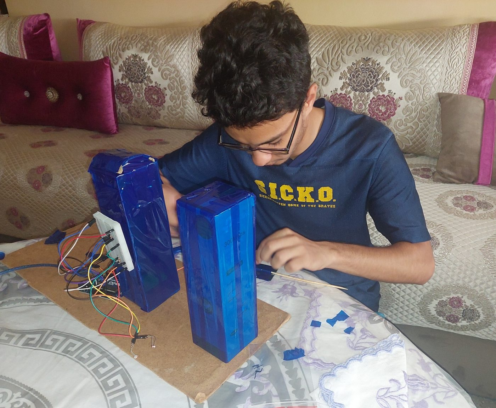

2026 — 2029
ENSEEIHT · Toulouse
Cycle ingénieur en Électrique, Électronique et Automatique. Actuellement en première année ; diplôme prévu en 2029.
Curieux par nature, ingénieur par passion
Bonjour ! Je suis étudiant à l’ENSEEIHT, en filière Électrique, Électronique et Automatique.
Toulouse, France
Un parcours en mathématiques et en physique, aujourd’hui tourné vers l’électronique et les systèmes embarqués.
Cycle ingénieur en Électrique, Électronique et Automatique. Actuellement en première année ; diplôme prévu en 2029.
Lycée Moulay Youssef, Maroc. Deux années de formation scientifique en mathématiques, physique et sciences de l’ingénieur.
Maroc · Mention Très Bien.

Un système d’orientation solaire uniaxiale commandé par Arduino compare les mesures de deux photorésistances LDR. Le panneau suit correctement la lumière et les essais ont montré une amélioration de la puissance récupérée.
La régulation MPPT (Maximum Power Point Tracking) a été étudiée théoriquement et simulée. Les simulations ont montré une amélioration de la puissance récupérée. Cette partie n’a pas été réalisée expérimentalement.
Présentation originale en français · PDF · 8,4 Mo
Après mes classes préparatoires au Maroc, j’ai rejoint Toulouse pour poursuivre ma formation d’ingénieur à l’ENSEEIHT.
J’aimerais effectuer un échange universitaire ou un stage aux États-Unis, attiré par leurs activités industrielles et de recherche, notamment en électronique et en systèmes embarqués. Il s’agit d’un projet de mobilité à construire.
Atelier collaboratif
Climate Fresk
J’ai participé à un atelier collaboratif consacré au changement climatique, à ses causes et à ses conséquences. Nous avons travaillé ensemble pour comprendre les liens entre ces différents phénomènes.
Climat et environnement
Théâtre interactif
J’ai assisté en tant que spectateur à une pièce de théâtre interactive abordant le harcèlement, le consentement et les violences sexistes et sexuelles, à travers la mise en scène et les échanges.
Sensibilisation et respect
Conférences · Toulouse
J’ai assisté à des conférences sur des enjeux environnementaux et sociétaux. Elles m’ont permis d’entendre différents points de vue sur des questions qui dépassent le cadre de mes cours d’ingénieur.
Société et avenir
Je pratique le sport chaque semaine, en loisir. La musique et le cinéma font aussi partie de mes passions.
En première année du cycle ingénieur, je construis progressivement mon projet professionnel. Je souhaite approfondir mes connaissances en électronique et en systèmes embarqués, et découvrir les réalités de ces métiers.
Mes prochaines étapes : poursuivre les projets pratiques, rencontrer des professionnels et acquérir une première expérience en stage.
Une courte présentation pour découvrir mon parcours et mes centres d’intérêt.
Ma présentation vidéo sera bientôt disponible.
Téléchargez mon CV en français ou en anglais.